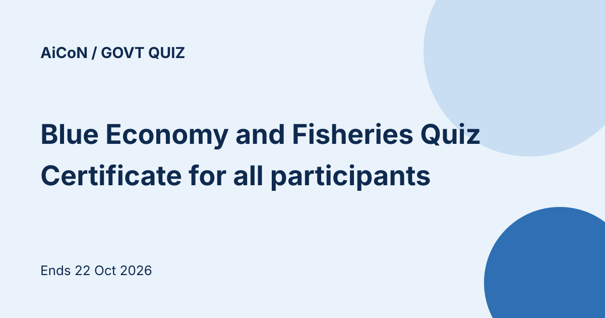

Blue Economy and Fisheries Quiz 2026: MyGov e-certificate, ends 22 October
The Department of Fisheries (Ministry of Fisheries, Animal Husbandry and Dairying) and MyGov are running the Blue Economy and Fisheries Quiz 2026 for National Fish Farmers Day. It is open to all Indian citizens until 22 October 2026, 11:45 PM. Every participant gets a certificate of participation. There is no cash prize.

At a glance
- Organiser: Department of Fisheries with MyGov
- Dates: 22 July 2026 to 22 October 2026, 11:45 PM
- Format: 20 questions in 600 seconds (10 minutes)
- Who: all Indian citizens
- Reward: certificate of participation for all participants
Rules from the terms
- The timer starts when you click Start Quiz
- One person can take the quiz only once
- Organisers can disqualify entries with false or incomplete information
- Organisers are not responsible for lost, late or incomplete entries, and proof of submission is not proof of receipt
- The organisers can amend or withdraw the quiz, and their decision is final
Why this quiz
National Fish Farmers Day is observed on 10 July. It marks the successful induced breeding of Indian Major Carps in 1957 by Dr. Hiralal Chaudhuri and Dr. K. H. Alikunhi. The campaign aims to raise awareness about fisheries and aquaculture and sustainable fishing, and to recognise the role of fish farmers in India's Blue Economy.
We read the MyGov quiz page and its terms on 14 October 2026. The page showed Closed because we were not logged in. We did not take the quiz.
Source: Blue Economy and Fisheries Quiz 2026 (MyGov). Checked 14 October 2026. This is an AiCoN explainer, not a government publication.